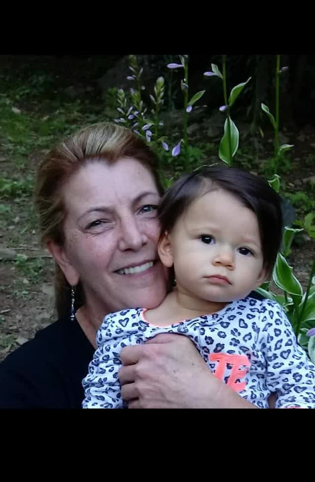

Lori Osmun with Willow.
Lori Osmun
A mother, grandmother, healer, and part of this family's foundation.Her love and generosity helped make the family's first home possible.
Lori Osmun was Rachelle's mother, a beloved grandmother, and a deeply loved part of this family's story.
Lori Osmun was born in Lyons, New York. She spent her life in medicine, beginning as an X-ray technician and later becoming a CT technologist. She took great pride in her work and in caring for the people who passed through her imaging rooms over the years.
She met her husband while she was studying radiography — he was her professor. They married and built a life together, raising a family and welcoming two young boys from his previous marriage.
Lori was a beautiful and sophisticated woman who took pride in everything she did. She loved dressing up, traveling, antiquing, and keeping an immaculate home. Creativity was always close to her hands. She cross-stitched, crafted, and spent time making things with her grandchildren.
One of her favorite outings with the kids was to Country Junction, where they could visit the animals at the petting zoo and wander the store together.
She was also a devoted Queen fan, and few songs captured her spirit like Bohemian Rhapsody.
Her grandchildren and children adored her, and her passing came far too soon. The family still feels her presence everywhere they go.
One of Lori's Favorite Songs
Queen's Bohemian Rhapsody was one of the songs that felt like her.
A Video the Family Wanted Here
A remembrance held close and kept here with her page.